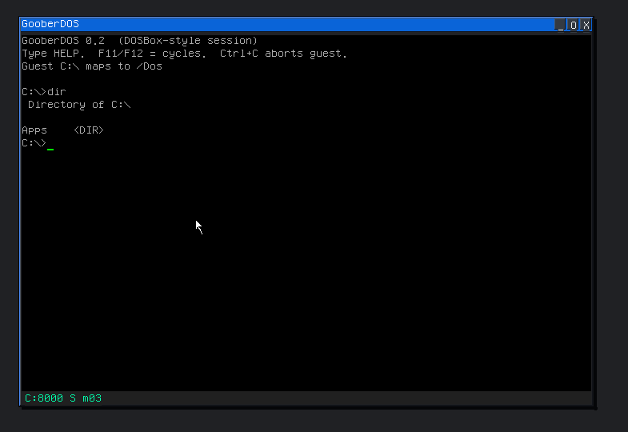

goober.dos
Launch GooberDOS, the soft MS-DOS guest, from GooberC. There is no separate use goober.dos. dos_run is a core builtin. This page follows gooberc/libs/dos.md.
| Form | Result |
|---|---|
dos_run path | Starts GooberDOS on a .COM or .EXE under /Dos, or any VFS path. Returns 1 when the launch is ok |
use goober.console
dos_run "Dos/Apps/HELLO.COM"
dos_run "Dos/Apps/VER.COM"
exitShared folder
Guest C:\ is host /Dos. Drop apps into /Dos or /Dos/Apps with File Explorer, then double-click them or call dos_run.
GooberDOS runs real-mode DOS apps (files, text, Mode 13h, mouse) without sound. The guest notes live in dosemu/README.md in the source tree.
GooberDOS
